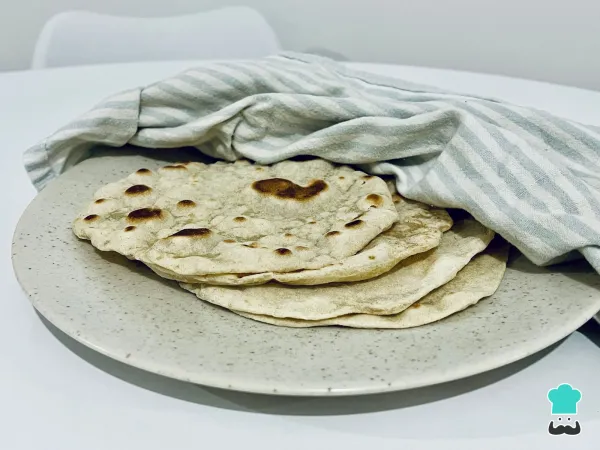

Flour Tortillas Recipe

Description
With this recipe you will be cooking some delicious flour tortillas, typical food from the northern states of Mexico
Ingredients
- 1 cup of flour powder
- 1/3 cup of water
- 1 spoon of oil
Steps
- First, mix the flour powder with almost all the water. Add the water in a progressive way, not all at once.
- Knead he mixture until you are able to make a small consistent ball. If the ball is too dry, add more water.
- Let the flour ball rest for 15 minutes. After that, split the ball in 4 even pieces and stretch them evenly.
- Heat a pan, add some oil and when hot, add the flat pieces. Flip them once they start to inflate.
- Once ready, remove them from the pan.
Go back